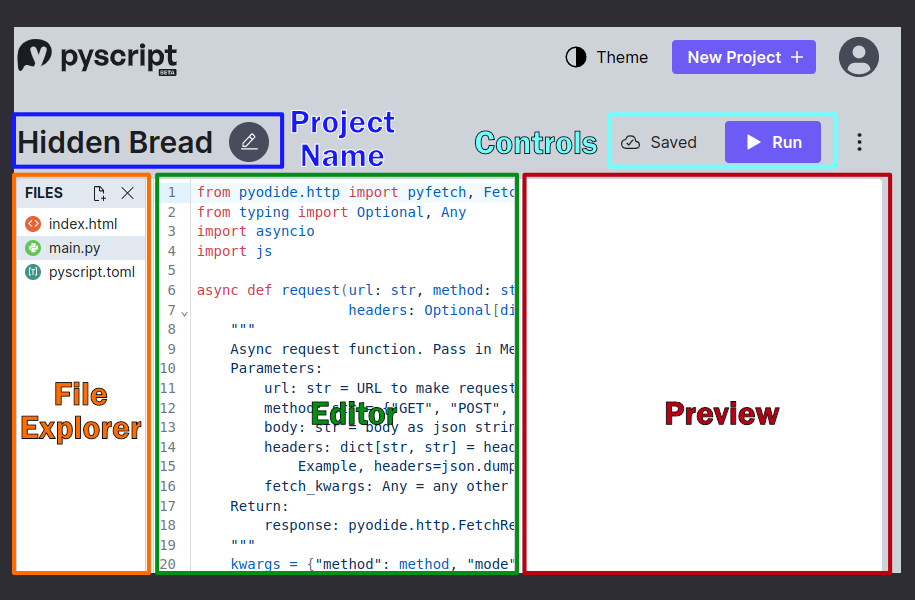

When you first go to PyScript.com and log in, you'll see your projects laid out as a grid of cards...

Clicking on the "Edit" button on a specific card takes you yo the editor view for that project.
Each project has an editor view, split into three separate panes: the file explorer, the editor, and the preview. Let's look at each of them individually:
Shows the files in this project, that are hosted on PyScript.com's servers in a single location.
NOT the contents of the Emscripten virtual filesystem.
Example using [[fetch]] config
Advanced code editor based on the CodeMirror library, with auto-complete, formatting, etc.
Control+Enter (or Command+Enter on Mac) to re-run code
When you "run" your code as mentioned above, the contents of your index.html file are loaded as the source of an iframe embedded into the right-hand side of the editor display.
Functions almost exactly like if they were a standalone webpage, but because the page is inside an iframe inside the window, a few specific things will be diffeernt. LocalStorage, ?????
Click the three-dots next to the run button and hit View Site (or the same button from the dashboard). This will take you to a unique page which is your PyScript App. These links are enduring and sharable, and can be simply emailed/tweeted/texted/telegraphed to a friend, teacher, or website to share the project page.
This is what hooked me on this idea...
Again, I must stress here that, I'm not an Anaconda employee, I talk with the folks there on both the PyScript Open Source and the PyScript.com team quite a bit. Everything I'm sharing here is my personal perception, and you shouldn't read any of it to be the official position or intention of Anaconda or its employees.
That said, from casual conversations with some of the PyScript.com team, I've been struck by how consciencous they are of wanting to maintain the universality of PyScript as an open source project. There's no desire to add features to PyScript that would prefernce the use of PyScript.com over any other implementation of a similar idea, or of steering the project in specific ways that would benefit PSDC. PyScript.com is consistently talked about as yet another way to get people started with Python right now, and make coders' work sharable and viewable without installing anything.